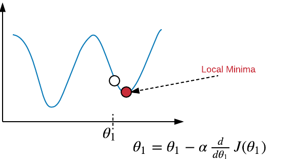

Linear Regression
Perceptron Learning Algorithm is basically a classification algorithm. Here by regression we mean that we’d have to predict real valued output not just +1/-1 or 0/1.
Linear regression is study of relationship between a scalar dependent variable y and one or more explanatory variables or features denoted by X. If there is only one feature, we say it is simple linear regression else for more than one, we say it is multiple linear regression.In linear regression, data is modeled using linear predictor functions, and unknown model parameters are estimated from the data. Such models are called linear models. Here our goal is prediction or forecasting. We’ll try to fit the predictive model to a dataset of y and X values. After developing such model, if an additional value of X is given without its y value, the model can be used to make predictions of the y value.
Notation:
$ m $ - number of training examples
$ X $ - input variables
$ y $ - output variable
$ (x^i,y^i) $ - i-th training example
The prediction equation is called hypothesis. In linear model, hypothesis is of the form $ h_\theta(x) = \theta_0 + \theta_1x $, where $ \theta_0 $ and $ \theta_1 $ are the parameters to be estimated. We’ll introduce $ x_0=1 $ as a new feature to make our hypothesis $ h_\theta(x) = \theta^Tx $ . $ h_\theta(x) $ is the predicted output where $ y $ is the original output. We have to minimize the error between the two, $ h_\theta(x)$ and $ y $.
The error function is given by the squared error function which is given by
$ J(\theta_0, \theta_1) = (\frac{1}{2m}) \sum_{i=1}^{m}(h_\theta(x^i) - y^i)^2 $
To minimize the error function $ J $ we'd have to adjust $ \theta_0 $ and $ \theta_1 $ so that $ h_\theta(x) $ is close to y.Outline for minimization:
- Start with some $ \theta_0 $ and $ \theta_1 $
- Keep changing them to reduce $ J(\theta_0, \theta_1) $ until we get minimum value.

$ \theta_j = \theta_j - \alpha \frac{\partial }{\partial \theta_0} J(\theta_0, \theta_1) $ , for $ j=0 $ and $ j=1 $
Note:- $ \theta_0 $ and $ \theta_1 $ should be simultaneously updated.
- $ \alpha $ is learning rate. It should neither be too small nor too big. If it is small, it can make the algorithm slower. If too big, it may fail to minimize.
$ \theta_j = \theta_j - \frac{\alpha}{m} \sum_{i=0}^{m}(\theta^Tx^i - y^i) x^i $ , for $ j=0 $ and $ j=1 $
Lets see now how to implement it using MATLAB, Remember how $ y $ and$ X $ data is,$ y = \begin{bmatrix} y_1\\ y_2\\ .\\ .\\ y_n\\ \end{bmatrix}$, $ X = \begin{bmatrix} 1& x_1 \\ 1& x_2\\ .&.\\ .&.\\ 1& x_n\\ \end{bmatrix}$ , $ \theta = \begin{bmatrix} \theta_0 \\ \theta_1 \\ \end{bmatrix}$
The matrices X and theta should be multiplied by care. data1.txt file contains two columns. First is the feature and the other is the target values or output.
data = load('data1.txt');
X = data(:, 1); y = data(:, 2);
m = length(y); % number of training examples
X = [ones(m, 1), data(:,1)]; % Add a column of ones to x
theta = zeros(2, 1); % initialize fitting parameters
% Some gradient descent settings
iterations = 1500;
alpha = 0.01;
% compute and display initial cost
computeCost(X, y, theta); %function described below
theta = gradientDescent(X, y, theta, alpha, iterations); % theta contains value of theta0 and theta1
predict1 = [1, 3.5] *theta; %predict for new data
function J = computeCost(X, y, theta)
m = length(y); % number of training examples
J = 0;
J = sum((X*theta - y).^2)/(2*m);
end
function [theta, J_history] = gradientDescent(X, y, theta, alpha, num_iters)
% Initialize some useful values
m = length(y); % number of training examples
J_history = zeros(num_iters, 1);
% the number of features
n = size(X, 2);
for iter = 1:num_iters
theta = theta - (alpha / m) * (X' * (X * theta - y));
% Save the cost J in every iteration
J_history(iter) = computCost(X,y,theta);
end
end